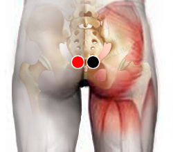

Pseudomona aureoginosa
recto - recto
pleura - pleura
suprarrenal - pulmón
cervical 4- cervical 4
oido- temporal
plexo lumbosacro - P. lumbosacro

Generalidades:
Se cree que origina la Metástasis. Pus verde, infección hospitalaria sobre todo si se colocan sondas. Cuando se presenta en la caja torácica da problemas pulmonares.
Asociada con Clamydia puede dar cancer cervico-uterino.
Las pseudomonas son bacterias gram-negativas, se diversifican en varias especies, todas ellas potencialmente patógenas para el humano. Se encuentran en todas partes: suelos, agua, plantas y animales.Se encuentra en un porcentaje de las heces de la población humana que va del 2 al 8% sin causar patología. Por lo que solo ataca en situaciones especiales como son: quemados, pacientes con cáncer, enfermos de fibrosis quística afectando vías respiratorias o aquellos pacientes que tienen dispositivos como catéteres, válvulas cardíacas, dispositivos intrauterinos a los cuales se adhiere formando una biopelícula.
Las pseudomonas producen diversas exotoxinas, encimas hidrolíticas que dañan los tejidos conjuntivos, así como mecanismos que deprimen al sistema inmune (probable mecanismo responsable de las metástasis) . Es altamente resistente a antibióticos. Es un organismo altamente adaptable a los cambios del medio ambiente; así mismo se adapta cuando detecta un número elevado de otras pseudomonas "sensor de quorum". Puede formar colonias mediante complejas biopelículas.
Transmisión
Infección en hospitales por el uso de dispositivos como catéteres, válvulas, dispositivo intrauterino, etc.